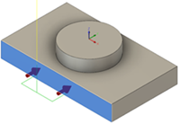

'''Palpage de l'angle d'une face'''
'''Tolérance d'angle'''
1 – Plan normal à l'axe Y
Valeur d'écart acceptable au niveau de l'angle de la fonction géométrique.
Cette tolérance bilatérale correspond à la variation maximum et minimum de l'angle pour être considéré inclus dans la tolérance.Un élément géométrique dont l'écart dépasse cette valeur est considéré hors tolérance.
Par exemple, lors du palpage d'une face avec la stratégie '''Angle suivant L'axe Y''', l'angle est mesuré depuis la face et normal à l'axe Y.
 |
|
'''Palpage de l'angle d'une face''' |
'''Tolérance d'angle''' |